| 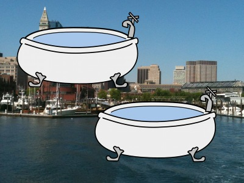 |
| Boston Tubs (Chicago Cubs) |
| 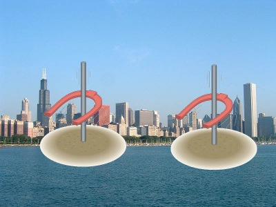 |
| Chicago Ringers (Texas Rangers) |
| 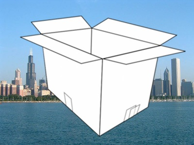 |
| Chicago White Box (Chicago White Sox) |
| 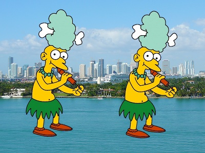 |
| Miami Mels (New York Mets) |
| 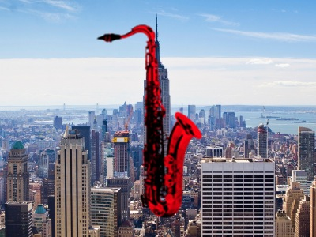 |
| New York Red Sax (Boston Red Sox) |
| 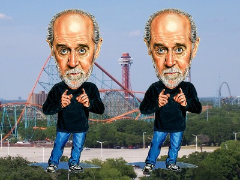 |
| [Arlington] Texas Carlins (Miami Marlins) |
| 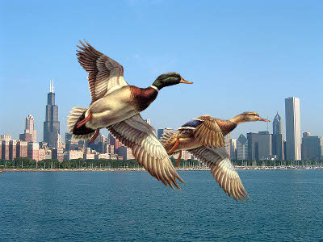 |
| Chicago Ducks (Milwaukee Bucks) |
| 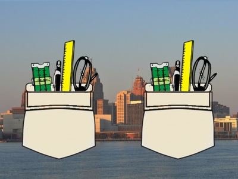 |
| Detroit Pockets (Houston Rockets) |
| 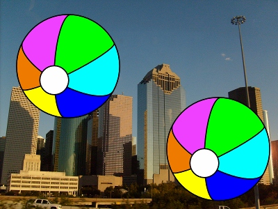 |
| Houston Balls (Chicago Bulls) |
| 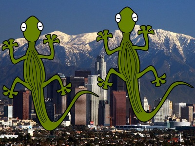 |
| Los Angeles Lizards (Washington Wizards) |
| 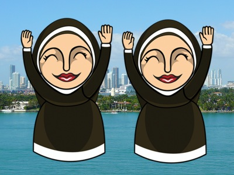 |
| Miami Nuns (Phoenix Suns) |
| 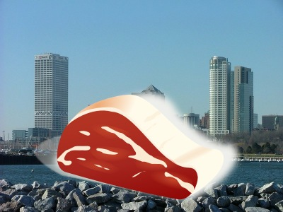 |
| Milwaukee Meat (Miami Heat) |
| 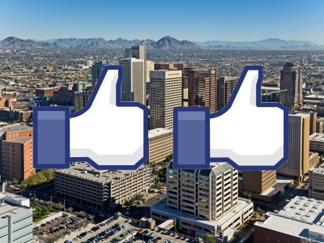 |
| Phoenix Likers (Los Angeles Lakers) |
| 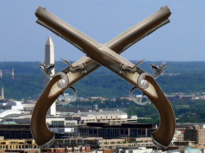 |
| Washington Pistols (Detroit Pistons) |
| 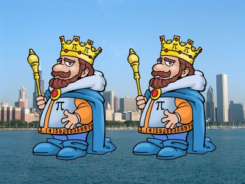 |
| Chicago Pi Kings (Minnesota Vikings) |
| 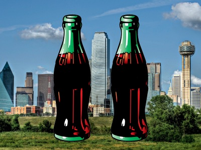 |
| Dallas Colas (Indianapolis Colts) |
| 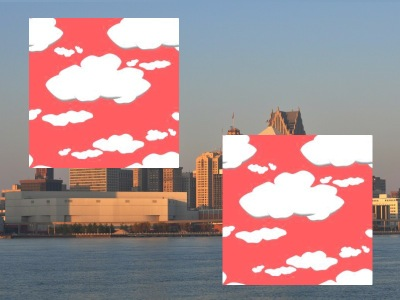 |
| Detroit Red Skies (Washington Red Skins) |
| 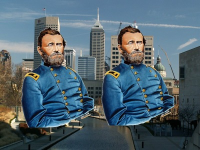 |
| Indianapolis Grants (New York Giants) |
| 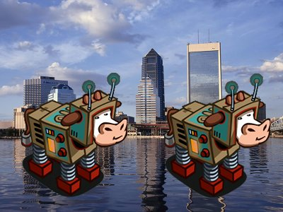 |
| Jacksonville Cow Bots (Dallas Cowboys) |
| 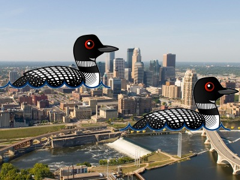 |
| [Minneapolis] Minnesota Loons (Detroit Lions) |
| 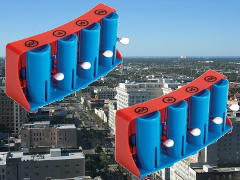 |
| New Orleans Changers (San Diego Chargers) |
| 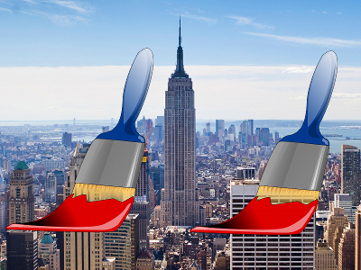 |
| New York Paints (Buffalo Saints) |
| 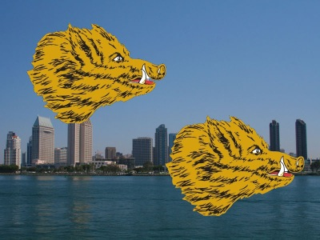 |
| San Diego Boars (Chicago Bears) |
| 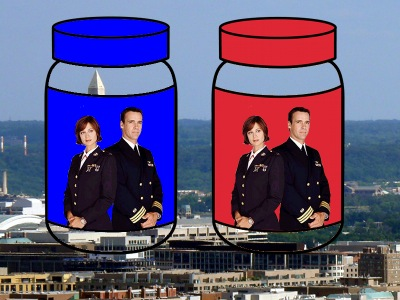 |
| Washington Jag Jars (Jacksonville Jaguars) |
|
All of these images are city scapes of an American city with a clip art on top that represents the mascot of one of three sports leagues (NFL, NBA, and MLB) from a different city. The cities are ordered by league and then alphabetized within each league. Each sports teams' city (or state in the case of the Vikings and the Rangers) is represented elsewhere in the puzzle.
Separating by league and ordering by connecting each team to its correct city gives three distinct loops. Reading the correct letter out of each team mascot around the loops gives three words: MASCOT WASHBURN UNIVERSITY (in given order by league). Washburn University's mascot is the answer to this puzzle: ICHABOD
MLB:
- Texas Carlins (Miami Marlins) - M
- Chicago Ringers (Texas Rangers) - A
- Chicago White Box (Chicago White Sox) - S
- Boston Tubs (Chicago Cubs) - C
- New York Red Sax (Boston Red Sox) - O
- Miami Mels (New York Mets) - T
NBA:
- Los Angeles Lizards (Washington Wizards) - W
- Phoenix Likers (LA Lakers) - A
- Miami Nuns (Phoenix Suns) - S
- Milwaukee Meat (Miami Heat) - H
- Chicago Ducks (Milwaukee Bucks) - B
- Houston Balls (Chicago Bulls) - U
- Detroit Pockets (Houston Rockets) - R
- Washington Pistols (Detroit Pistons) - N
NFL:
- Washington Jag Jars (Jacksonville Jaguars) - U
- Detroit Red Skies (Washington Redskins) - N
- Minnesota Loons (Detroit Lions) - I
- Chicago Bikings (Minnesota Vikings) - V
- San Diego Boars (Chicago Bears) - E
- New Orleans Changers (San Diego Chargers) - R
- Buffalo Paints (New Orleans Saints) - S
- Indianapolis Bells (Buffalo Bills) - I
- Dallas Colas (Indianapolis Colts) - T
- Jacksonville Cow Bots (Dallas Cowboys) - Y
|